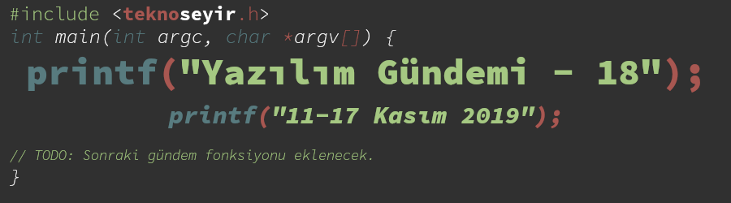
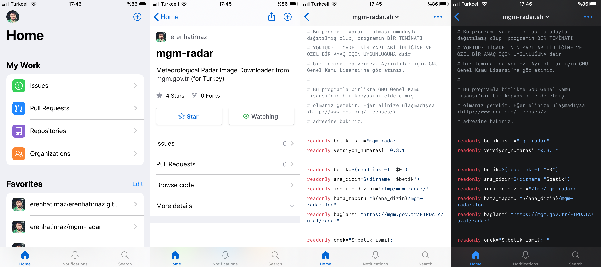
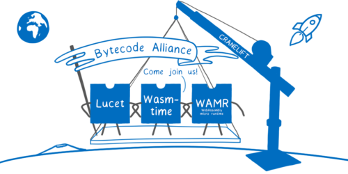

Yazılım Gündemi - 18
11-17 Kasım 2019
İçindekiler

< Önceki Gündem | 11-17 Kasım 2019 | Sonraki Gündem >
1 GitHub Universe 2019 etkinliği gerçekleşti
GitHub'ın her yıl geleneksel olarak düzenlediği Universe etkinliği bu sene de, bu hafta içerisinde gerçekleşti. Etkinlik ABD'deki Kaliforniya eyaletinde gerçekleşti fakat aynı zamanda canlı yayın ile de tüm dünyaya yayınlandı. Ben etkinliği izleyemedim ama etkinlikle duyurdukları her şeyi toparladıkları blog yazısını inceledim ve sizlere birkaç tane geliştmeyi aktarmaya çalışacağım. Öyleyse başlayalım:
1.1 GitHub iOS uygulamasının Beta programı duyuruldu
Mobilden GitHub'a erişebilmek bazen benim de ihtiyaç duyduğum bir şeydi. Şu an zaten mobil tarayıcıdan GitHub'a girdiğinizde ona göre bir arayüz geliyor fakat yine pek kullanışlı değil. iOS uygulama mağazasında bazı üçüncü parti uygulamalar olsa da ben pek güvenemedim. Sonuçta tüm depolarımıza erişim izni veriyoruz. GitHub da bu alanda bir eksiklik hissetmiş olacak ki bu etkinlikle iOS uygulamasının beta sürecinin başladığını duyurdu. Android için ise yakında başlayacağını belirttiler. Duyar duymaz ben de hemen Beta için kayıt yaptım ve 3-4 gündür kullanıyorum. Siz de iOS uygulamanın beta programına kaydolmak için buraya; Android uygulamanın bekleme listesine kaydolmak için buraya tıklayabilirsiniz.

Kullandığım kadarıyla gayet güzel bir uygulama olmuş fakat şu an için eksikleri ve hataları mevcut. Örneğin hangi branch'da olduğumu göremiyorum ya da branch'lar arasında geçiş yapamıyorum (bence olması gereken bir özellik). README.md dosyalarındaki görsellerde de gözükmeme sorunu mevcut. Ayrıca gece moduna teması da mevcut. İşin ilginci GitHub web'de henüz gece modu teması yok. Umarım web sürümüne de gelir. Geceleri GitHub'ı açtığımda far görmüş tavşan gibi kalmak istemiyorum. Gerekli geri bildirimleri mail olarak gönderdim. Gerekli geliştirmeler devam edecektir.
1.2 GitHub Arşiv Programı duyuruldu
GitHub herkese açık depolarımızı 1000 yıl boyunca saklamak için hazırlanıyor. Birkaç ülkenin meyve ve sebze tohumları için yaptığı çalışmanın aynısını GitHub da kodlarımız için yapmak için kollarını sıvadı. Bu etkinlikte duyurulan bu programın amacı ise gelecek nesillere şimdiki zamanın programlama kültürü ile ilgili materyaller bırakmak. Bu sayede geleceğin tarihçileri ya da "dijital arkeolojist"leri bu depoları inceleyerek programlama kültürümüz ya da topluluklarımız ile ilgili bilgiler edinebilecekler ya da bambaşka amaçlar için kullanabilirler -kim bilir.
Elbette GitHub bu işi tek başına yapmıyor. Partnerlerin hepsini tek tek yazmak yerine programdaki rollerini açıklayarak ilerleyelim.
- GitHub: Zaten tüm verileri sağlayan şirketin kendisi. GitHub neredeyse anlık olarak tüm depolara ait verileri API sistemi üzerinden erişilebilir şekilde diğer partnerler ile paylaşacak.
- GHTorrent: GitHub'ın tüm herkese açık verilerini takip edecek ve bunları günlük ya da aylık formatlarda erişilebilecek şekilde saklayacak.
- GH Archive: GHTorrent'e ek olarak bu hizmet aynı zamanda BigQuery kullanarak sorgulama özelliği de sunacak. Bu hizmetten de saatlik, günlük ya da aylık şekilde indirmeler yapabileceğiz.
- Internet Archive: Zaten birçok farklı web sitenin eski hallerini saklayan bu hizmet aynı şeyi GitHub depolarının sayfaları için de yapacak ve bunlara git veya https üzerinden erişilebilecek.
- Software Heritage Foundation: Aylık olarak GitHub'ı tarayacak ve herkese açık verileri kendi arşivine alacak.
- Bodleian Kütüphanesi: Oxford Üniversite'ne bağlı bu kütüphane GitHub'daki en çok yıldız alan ve en çok proje tarafından kullanılan projeleri kendi depolarında (repo değil, fiziksel depo) film makaralarında saklayacak.
- Arctic World Archive: 2 Şubat 2020 tarihinde alınacak tüm aktif herkese açık depoların görüntüleri (snapshot) yine film makaralarında, kuzey kutbuna çok yakın bir yerde uzun ömürlü olacak şekilde depolanacak.
- Microsoft Project Silica: Her beş yılda bir olacak şekilde Microsoft Resarch takımı aktif ve herkese açık tüm depoları 10.000 yıl saklayabilecek quartz cam plakalara femtosecond lazer kullarak yazacak.
Gördüğünüz gibi bayağı büyük bir organizasyon şeklinde işleyecek bu program. Diğer detaylı ayrıntılar için GitHub'ın hazırladığı bu web sayfasını ziyaret edebilirsiniz. Açıkcası her ne kadar gelecekler kodlarımızın ne amaçla kullanılacağını bilmesek de program benim hoşuma gitti. Hatta güzel birkaç bilim-kurgu senaryosu da aklıma geldi konuyla ilgili.
Bu konuyla ilgili siz ne düşünüyorsunuz? Sizce gelecekte kodlarımız hangi amaçlar için kullanılabilir? Yorumlar bölümünde beyin fırtınası yapalım.
Etkinlikle duyurulan diğer birkaç gelişme ise şu şekilde:
- GitHub Actions ve GitHub Packages beta programından çıktılar,
- Bildirimlerde iyileştirmeler,
- Bir fonksiyonun nerede tanımlandığını ya da nerelerde kullanıldığını gösterme,
- Kodlar içerisinde özel aramalar yapabilme,
- GitHub Güvenlik Labaratuvarı tanıtıldı,
- GitHub Enterprise Server 2.19 sürümü duyuruldu,
Ayrıca bu hafta içerisinde GitHub'ın Kullanım Sözleşmesi ve Gizlilik Anlaşması da güncellendi.
2 Mozilla, Bytecode Birliğini tanıttı

Tek amacı olmasa da en büyük amaçlarından biri olan JavaScript'e alternatif olması için geliştirilen WebAssembly programlama diline en çok katkı yapanlardan birisi olan Mozilla, topluluk için çalışmaya devam ediyor. Elbette birliği tek başına kurmadı. Şu an için birliğin içerisinde Fastly, Intel ve Red Hat firmaları var fakat daha çok firmanın da katılmasını bekliyorlar.
Günümüzde yazılım geliştirmenin evrildiği hal itibariyle üçüncü parti kütüphaneler olmadan bir yazılım çözümü üretmek neredeyse imkansız hale geldi. Elbette üçüncü parti kütüphaneler ya da araçlar kullanmanın kötü bir yanı yok, aksine açık kaynak topluluğu için çok faydalı da oluyor fakat bu sürecin sağlıklı olmayan bazı parçaları mevcut. Şöyle ki, kullanıcı bir uygulamayı sistemine kurduğunda ya da tarayıcısı üzerinden çalıştırdığında beraberinde o uygulamanın bağımlı olduğu tüm kütüphaneleri de sistemine indiriyor ve çalıştırıyor. Fakat uygulamayı çalıştırarak ona güvendiğini belirten bu kullanıcının, uygulamanın beraberinde getirdiği kütüphanelere ya da araçlara güvenmesi için bir neden yok (aslında geliştirici olarak bizim de güvenmemiz için bir neden yok). Bunun somut örneklerini önceki yazılım gündemi yazılarında çokça aktarmıştım (zararlı kod içeren 3.parti kütüphaneden, kötü amaçlı kişilerin ellerine geçmiş kütüphanelere kadar örnekler mevcut). İşte bu birliğin amacı da WebAssembly ekosistemi için tam olarak bu güven ortamını yaratmak.
Konu hakkında siz ne düşünüyorsunuz? Sizce de artık üçüncü parti kütüphane ve araçlara bakış açımızı değiştirme zamanı geldi mi? Sizin üçüncü parti kütüphane seçerken dikkat ettiğiniz şeyler neler? Yorumlar kısmında konuşalım.
3 OpenJDK kod tabanını GitHub'a taşımayı tartışıyor
Java'nın açık kaynak sürümü olan OpenJDK, bu sıralar çeşitli önerileri tartışmakla meşgul. Bunlardan bu sıralar gündemde olanları ise şu şekilde:
- JEP 296: Consolidate The JDK Forest into a Single Repository
- JEP 357: Migrate from Mercurial to Git
- JEP 369: Migrate to GitHub
Bunlardan ilki şu sıralar birçok firmanın da uygulamaya başladığı yeni bir moda olan mono-repo sistemine geçmeyi öneriyor. Yani tüm kod tabanının büyük tek bir depoda tutulduğu yapı. İkincisi ise Git'den daha önce de var olan bir versiyon kontrol sistemi olan Mercurial'den Git'e geçmeyi öneriyor ve sonuncusu ise bugün konuşacağımız tüm kod tabanının GitHub'a taşınmasını öneriyor. Fakat burada belirtmekte fayda var sadece kodların GitHub'a taşınması düşünülüyor; issue tracker, wiki vb. yapılar yine olduğu yerde kalacaklar.
Öneri metini bayağı ayrıntılı bir şekilde hazırlanmış. Aynı metinde yer alan "Hedefler" başlığındaki birkaç taşınma nedeni ise şu şekilde:
- Geliştiriciler katkı yapmak için OpenJDK'ya özel bazı araçları kurmak zorunda kalmayacaklar,
- Commit öncesi kontroller çalıştırabilme,
- Mevcut e-posta tabanlı iş akışlarının benzerlerini desteklemesi,
- GitHub'ın erişilebilirlik özelliklerinden faydalanabilme
gibi özellikler OpenJDK takımını cezbeliyor. İlgili önerilerin metinlerini içeren sayfaları yukarıda maddeler hallinde bağlantı olarak ekledim. Daha detaylı bilgi için oraları kontrol edebilirsiniz.
4 Sourcehut, 2019 yılı özetini yayınladı
Günümüzde artık bir versiyon kontrol sistemi olmadan geliştirme yapmak imkansız
olmasa bile çok zor. Çoğumuz da artık versiyon kontrol sistemi olarak Git'i
varsayılan olarak kullanmaya başladık. Hatta proje klasörünü oluşturduktan
sonraki ilk işimiz git init komutunu çalıştırmak oluyor. Bu lokal Git
depolarından ziyade çoğumuz artık kodlarımızı bir uzak Git sunucusunda da
tutmak istiyoruz. Bunların en popülerleri ise GitHub ve GitLab gibi büyük
oyuncular. Fakat ben bugün size pek gündemde olmayan, ilk yazılım gündemi
yazısını okumadıysanız muhtemelen ilk kez duyacağınız farklı bir uzak kod
sunucusundan, Sourcehut'dan bahsetmek istiyorum. Çünkü bu hafta 15 Kasım
tarihinde Alpha sürecine girmesinin birinci yılı şerefine bir blog yazısı
yayınlandı.
Sourcehut aslında sadece bir uzak kod sunucusu değil; günümüz uygulama geliştirme süreçlerinde sürekli ihtiyaç duyduğumuz şu hizmetleri de olan komple bir proje yönetim sistemi diyebiliriz:
- Kodlarınızı depolayabileceğiniz: git.sr.ht,
- Çeşitli testleri belirli aralıklarla çalıştırabileceğiniz Continuous Integration sistemi: builds.sr.ht,
- Yapılacaklar listesi ve hata bildirimi gibi şeyler için: todo.sr.ht,
- Mail listesi için: lists.sr.ht,
- Rehber ve Wiki sayfaları hazırlamak için: man.sr.ht
ve tüm bu çözümleri arayüzü gibi sade olarak sunmaya çalışan bir site. Elbette tüm bu sistemler özgür yazılım lisanslarıyla geliştiriliyor.
Bir yıl içerisinde Sourcehut'daki gelişmelerin bir kısmı ise şu şekilde:
- Code Annotations özelliği (bkz: Yazılım Gündemi - 1),
- builds.sr.ht'de çalışan testlerin olduğu sanal makineye debug yapmak için ssh ile bağlanabilme,
- todo.sr.ht üzerindeki ticket sistemi olgunlaştırılmış,
- ilk çalışan işe alınmış
Diğer gelişmeler ve 2020 yılından beklentiler için mutlaka konu başlığına eklediğim blog yazısını inceleyin. Ben şahsen bu projeyi çok önemsiyorum ve ileride imkanım olduğunda maddi olarak da destek olmaya çalışacağım.
5 Yaklaşan Etkinlikler
| Etkinlik İsmi | Yeri | Tarihi |
|---|---|---|
| Open Source Yazılım Geliştirme | İstanbul | 20 Kasım 18:30 |
| Tüm İnterneti Nasıl Cache'leriz? Olasılıksal Veri Yapılarına Yolculuk | İstanbul | 20 Kasım 19:00 |
| How to Get Better at Writing CSS | İzmir | 20 Kasım 19:00 |
| KWORKS İnovatif Endüstriyel IoT Uygulamaları Paneli | İstanbul | 21 Kasım 18:00 |
| Web Uygulama Güvenliği ve Bug Bounty | Ankara | 21 Kasım 19:00 |
| SAP Inside Track Istanbul 2019 Part II | İstanbul | 23 Kasım 09:00 |
| GDG DevFest İzmir '19 | İzmir | 23 Kasım 09:00 |
| "Kubernetes Native" Uygulama Geliştirme | İstanbul | 23 Kasım 13:00 |
| GDG DevFest İstanbul '19 | İstanbul | 24 Kasım 09:00 |
| Gelişen Teknoloji Günleri'19 | İstanbul | 26 Kasım 09:30 |
| Digitalzone Meetups: 26 Kasım Buluşması | İstanbul | 26 Kasım 19:00 |
| Sosyal Mühendislik Saldırıları ve Korunma Yöntemleri | İstanbul | 27 Kasım 19:00 |
| Yapay Zekada Bias Çalıştayı | İstanbul | 30 Kasım 09:30 |
| Açık Hack | Gebze/Kocaeli | 30 Kasım 12:00 |
6 Diğer Haberler
- Go programlama dilinin artık paket arama vb. işler için yeni bir sitesi var: go.dev
- Mirantis firması, Docker'ın Enterprise kısmını satın aldı.
- AWS yeni hizmetini duyurdu: AWS Data Exchange.
- PHP 7.4.0 RC6 sürümü yayınlandı.
- GitHub'ın Göçmenlik ve Gümrük Muhafaza kurumu ile yaptığı iş anlaşmasının etkileri devam ediyor.
- RedHat Quay isimli projenin açık kaynak hali Project Quay ismiyle duyuruldu.
- "Redux Starter Kit" artık hayatına "Redux Toolkit" olarak devam edecek.
- Android geliştirme ile ilgili sürüm güncelleştirmeleri:
- Ionic, kendi React çözümünü duyurdu: Ionic React.
- Gatsby Cloud hizmeti duyuruldu.
- Ververica, Development ve Startup License programlarını duyurdu.
- HashiCopr Vault 1.3 sürümü duyuruldu.
- Kore4 ile gelecek özellikler açıklandı.
- GCC 7.5 sürümü yayınlandı.
- CockroachDB 19.2 sürümü duyuruldu.
- PostgreSQL'den birden fazla sürüm güncellemeleri çıktı.
- Gitea 1.10.0 sürümü duyuruldu.
- Winw 4.20 sürümü yayınlandı.
- GLSL kütüphanesinin 3.0.0 sürümü duyuruldu.
- OpenAPIGenerator v4.2.1. sürümü yayınlandı.
- jLuaScript ilk sürümü 1.0'ı duyurdu. Reddit duyurusu
- JIN PHP kütüphanesinin 3.5.o sürümü çıktı.
- DataKernel 3.1 sürümü çıktı.
7 Lisans

Yazılım Gündemi - 18 yazısı Eren Hatırnaz tarafından Creative Commons Atıf-GayriTicari-AynıLisanslaPaylaş 4.0 Uluslararası Lisansı (CC BY-NC-SA 4.0) ile lisanslanmıştır.